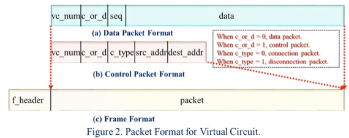

충남대학교 컴퓨터공학과 김상하 교수님의 "컴퓨터 네트워크" 강의를 필기한 내용입니다.
다소 잘못된 내용과 구어적 표현 이 포함되어 있을 수 있습니다.
참고
- Datagram방식은 미 국방성에서 나온 아이디어이다
- 전장의 특성상 네트워크가 끊어질 가능성이 높기 때문에, 네트워크가 끊어지더라고 우회해서 패킷을 보내기 위해 만들어진 기술인 것
- Virtual circuit의 경우에는 경로가 설정되고 나면 그 방향으로만 보낼 수 있기 때문에, 중간에 끊기면 패킷을 보낼 수가 없는 반면
- Datagram의 경우에는 다른 경로로 갈 수 있기 때문에 패킷이 도착할 수 있는 가능성이 더 높아지게 된다
Packet switching example
- 간단한 코드를 통해 작동방법 이해하기
Datagram
- 일단 기본 자료 구조는 위와 같더라
- 위의 자료구조는 Datagram의 자료구조인데 Virtual circuit의 자료구조도 packet_type만 바뀌고 frame_type은 바뀌지 않는다
- 즉, Network layer가 바뀌어도 다른 계층은 바꾸지 않아도 된다는 것을 이것을 통해서도 알 수 있다
- 그리고 위의 코드도 Datagram과 Virtual circuit이 저 send_data()라는 함수만 변경되고 나머지는 다 똑같이 이루어지더라
- 즉, Datagram을 위한 함수와 Virtual circuit을 위한 함수가 따로 제공되고 상위계층에서는 목적에 맞게 해당 함수를 불러다 쓰기만 하면 되고 내부 동작을 알 필요는 없으며 Data Link Layer의 send_data()함수는 변경하지 않아도 된다는 것
- 또한 Sender나 reciever의 경우에는 main()함수에 Application layer와 Transport layer가 들어갔지만 위 그림처럼 Node의 경우에는 main()함수에 Network layer가 들어간다 - Node의 최상위 노드는 Network layer이기 때문
Virtual circuit

- 구조를 보면 일단 위와 같다 - 이건 실제 패킷의 구조가 아닌 이해를 위해 간략하게 표시한 구조임
- 위에서 보여준 Datagram의 패킷과는 다르게 Virtual circuit패킷에는 connection과 disconnection phase를 나타내기 위한 비트와 별도의 패킷 구조가 존재한다
- vc_num : Virtual circuit number. 지난시간에 배웠던것처럼 virtual cirtuit을 식별하기 위한 id같은거다
- c_or_d : 패킷의 종류를 나타내는 비트. 위 그림처럼 1이면 데이터이고 0이면 컨트롤 패킷이다.
- 데이터 패킷일 때는 패킷의 순서를 알려주기 위한 seq와 데이터가 나머지 부분에 들어가게 되고
- 그리고 컨트롤 패킷일 때 c_type의 값이 0이면 connection packet이고, 1이면 disconnection packet이 된다. 나머지에는 송수신 주소가 들어가게 된다
- 따라서 패킷의 구조를 구조체로 정의하면 위와 같이 된다
- virtual circuit number를 위한 vc_num가 존재하고,
- 패킷의 종류를 위한 c_or_d가 존재하며
- c_or_d에 따라서 다른 구조를 가지게 하기 위해 나머지 부분들에 대해 union type으로 정의되어있는 것을 볼 수 있다
- 위의 그림은 Sender에 대한 구현인데 Datagram에서는 그냥 send_data()만을 상위계층에서 호출하는 것과는 달리 Virtual circuit에서는 connect()을 호출한 이후에 send_data()를 호출하게 되고 그것이 끝나면 disconnect()라는 함수를 호출하고 있는 것을 볼 수 있다
- 그리고 보면 main()에서는 network layer의 작동방식에 대한 것은 알 지 못한체 그냥 network layer의 함수들을 호출하고 있는 것을 알 수 있다 - 이러한 식으로 캡슐화가 이루어지는 것이다 이말이야
- 여기서도 보면 data link layer의 send_packet()의 함수는 datagram과 virtual circuit이 동일한 것을 볼 수 있다
- 노드의 구현에서는 main()이 network layer이기 때문에 여기서 get_packet을 하고, 패킷의 c_or_d비트에 따라서 각기 다른 함수를 호출해 주고 있는 것을 볼 수 있다
- handle_data_packet에서는 vc_table에서 vc_num을 이용해 route를 알아내고, 해당 route로 패킷을 전송해주는 것을 알 수 있다
- 그리고 handle_control_packet의 경우에는 c_type을 보고 0인지 1인지에 따라서 connect phase와 disconnect phase를 진행해주는 것을 알 수 있다
- 보면 connect phase에서는 루트를 설정하고 vc_table에 넣어주는 반면 disconnect phase에서는 vc_table에서 route를 가져온 다음 그놈을 지우는 것을 알 수 있다
- node의 datalink layer 함수들은 datagram과 동일하므로 생략
- Receiver의 경우에도 c_or_d를 보고 그에 맞는 함수를 호출해주는 것으로 network layer가 작동한다
- 마찬가지로 handle_control_packet의 경우에도 c_type을 보고 그에 맞는 동작을 하게 된다
그림으로 이해하기
- 위의 그림은 Virtual Circuit Table의 모습이다.
- 보면 Incoming의 경우에는 In Port와 In VC# 가 있다 - 해당 포트로 해당 Virtual Circuit Number를 가진 놈이 들어왔을때 매칭해라라는 뜻
- 그리고 Outgoing의 경우에는 Out Port와 Out VC# 가 있다 - 해당 포트로 해당 Virtual Circuit Number를 가지고 나가라는 뜻인데 여기에도 VCNum이 있는 이유는 In VCNum와 Out VCNum을 다르게 해줌으로써 얻는 이점이 있기 때문이다 - 근데 그게 뭔지는 안배운댄다
- 위와 같은 방식으로 통신이 진행된다고 하자
- 그리고 Topology는 위의 그림과 같다고 해보자
- 그럼 일단 VC1을 진행하기 위해 H1, A, B, D, H2의 순서로 connection control packet이 움직인다
- 그러고 나면 아래와 같은 방식으로 각 노드와 스테이션에 VCTable이 저장된다
- 보면 거쳐간 모든 노드에 0번 포트로 0번 VCNum이 들어왔고 1번 포트로 0번 VCNum을 가지고 나간 것을 볼 수 있다
- VC1인데 왜 0번이냐고 궁금할 수 있는데 VC1의 경우 위의 단계를 보면 VCNum이 0이기 때문에 0인 것이다. VCNum가 0이 되는 이유는 H1에서는 A로 VC를 보낸 적이 없기 때문에 VCNum0으로 패킷이 만들었기 때문이다
- 그리고 지금 설정한 이 경로대로 데이터가 전송이 되는 것으로 (2)단계까지 완성을 시킨다
- 그리고 위 그림은 (3)단계인데 VC2에 대해 H1, A, B, D, H3로 경로를 설정하면 위와 같은 그림이 된다
- 여기서 중요한게 있는데 위 그림에서 보면 D노드 의 VCTable의 마지막 행에는 0121이 아니라 0120로 적혀있다
- 이건 왜그러냐면 VCNum을 할당할때는 In VCNum과 무조건 같은 번호를 쓰는게 아니고 충돌이 나지 않는 번호를 고르기 때문이다
- 즉, A와 B노드에서는 1번 포트로 나가는 0번 VC가 있기 때문에 0번을 사용하게 되면 충돌이 나게 된다. 하지만 D노드에서는 1번 포트가 아닌 2번 포트로 나가야 되고, 2번 포트로 나가는 0번 VC는 없기 때문에 VC를 0으로 설정해주는 것이다
- 이제 위의 그림이 (4)단계인데 VC3(H2, D, B, E, H4)의 경로를 설정하면 위와 같은 그림이 된다
- 위의 그림에서도 볼 수 있듯이 H2는 D로 VC를 보낸 적이 없으니까 VC0번으로 시작해서 D에서도 1번 포트로 VC0를 받고, 0번 포트로 VC0으로 내보내도 충돌나지 않기 때문에 그렇게 내보낸 것을 볼 수 있다
- B와 E노드에서도 동일하게 In & Out port와 In & Out VC를 설정해준 것을 볼 수 있다
- In & Out VC가 같다고 해서 In VC값을 Out VC에 그대로 쓴 게 아니라는 것 꼭 기억해라
- (5)단계 VC4(H5, E, C, A, H1)의 경로설정을 하고 나면 위처럼 된다
- 마찬가지로 들어오고 나간 포트 번호와 해당 포트 번호에 대해 사용한 적이 없는 VC번호로 할당되어 있는 것을 볼 수 있다
- (6)단계에서는 VC2경로로 데이터를 보내게 되고
- (7)단계에서는 VC3경로를 지우게 된다
- Disconnect control packet을 보내고 난 뒤의 테이블 모습이 위의 그림이다
- 보면 VC3에 해당하는 경로가 싹 지워진 것을 볼 수 있다
- (8)단계에서는 VC4경로로 데이터가 움직이게 된다
- 시험공부할때 각 단계별로 connect, data, disconnect 패킷이 어떻게 움직이는지, 그리고 그때마다 VCTable들이 어떻게 갱신되는지 따라가봐라
External & internal operation
- 일단 Service Provider에 대해서 알아야 한다
- 먼저 컴퓨터나 핸드폰, 라우터 등의 단말들을 만드는 Equipment Provider가 있고
- 단말들을 연결할 회선들을 제공해주는 선로 제공자가 있다
- 그리고 Service Provider는 이런 단말들과 선로들을 설계 및 시공하여 통신을 가능하게 해주는 것이라고 할 수 있다
- 뭐 간단하게 생각해서 SKT 나 KT 생각하면 됨
- 이때 위의 그림을 보면
- 일단 사용자 단말과 네트워크 장비 간의 통신은 User Network Interface(UNI) 라고 하고
- 네트워크 장비들간의 통신은 Network Node Interface(NNI) 라고 한다
- 그리고 UNI에서는 Virtual Circuit을 사용하고, NNI에서는 Datagram을 사용하는 등 경우에 따라 다른 프로토콜을 사용하는 경우가 많더라
- 이렇게 이원화하는 이유는 SP는 NNI에서 일어나는 일들이나 프로토콜 등을 보안상의 이유로 사용자에게 알리고싶어하지 않기 때문이다
- 이때 UNI같은 겉으로 드러나는 통신을 External이라고도 하고 NNI처럼 내부적으로 일어나는 통신을 Internal이라고도 하는데
- 크게는 (1) External=Virtual Circuit, Internal=Datagram을 이용하는 경우, (2) External=Virtual Circuit, Internal=또 다른 Virtual Circuit을 이용하는 경우, (3) External=Datagram, Internal=Virtual Circuit을 이용하는 경우로 나눠볼 수 있다